실제 적용 사례 1
몽산포 솔비치 캠핑장
📁 몽산포 솔비치 사진 원본
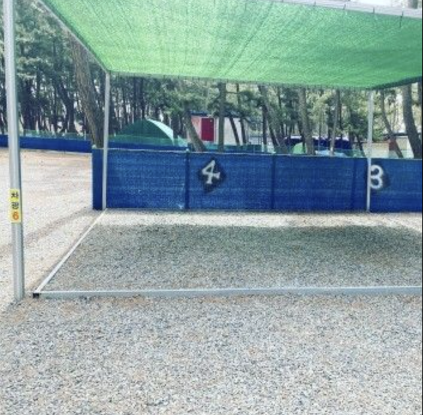
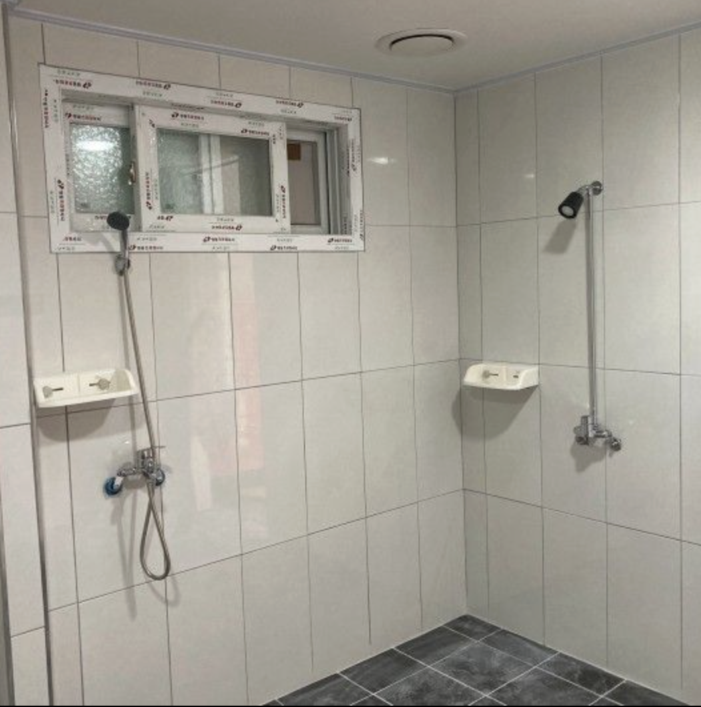
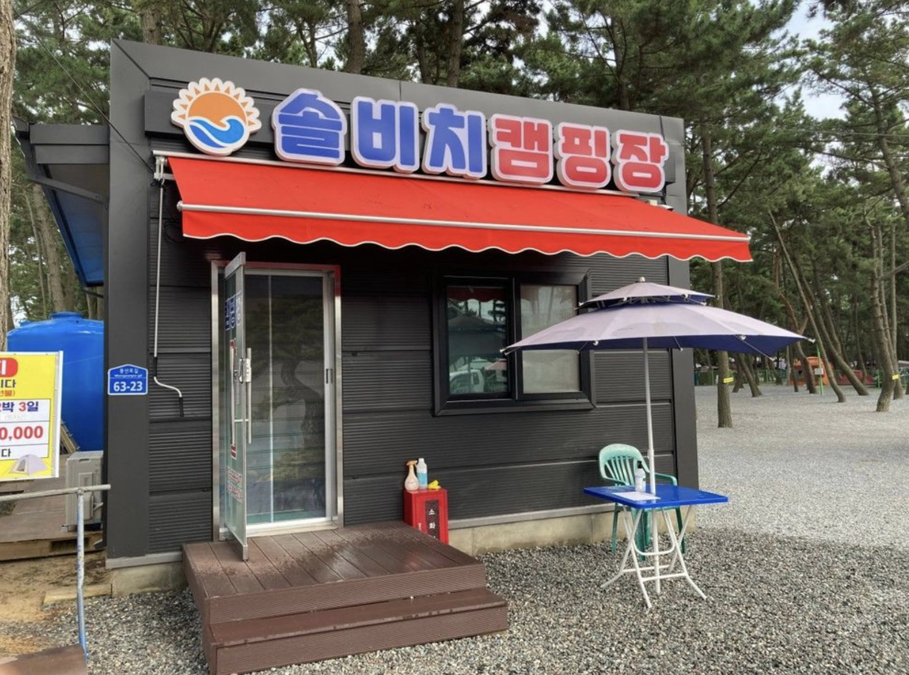


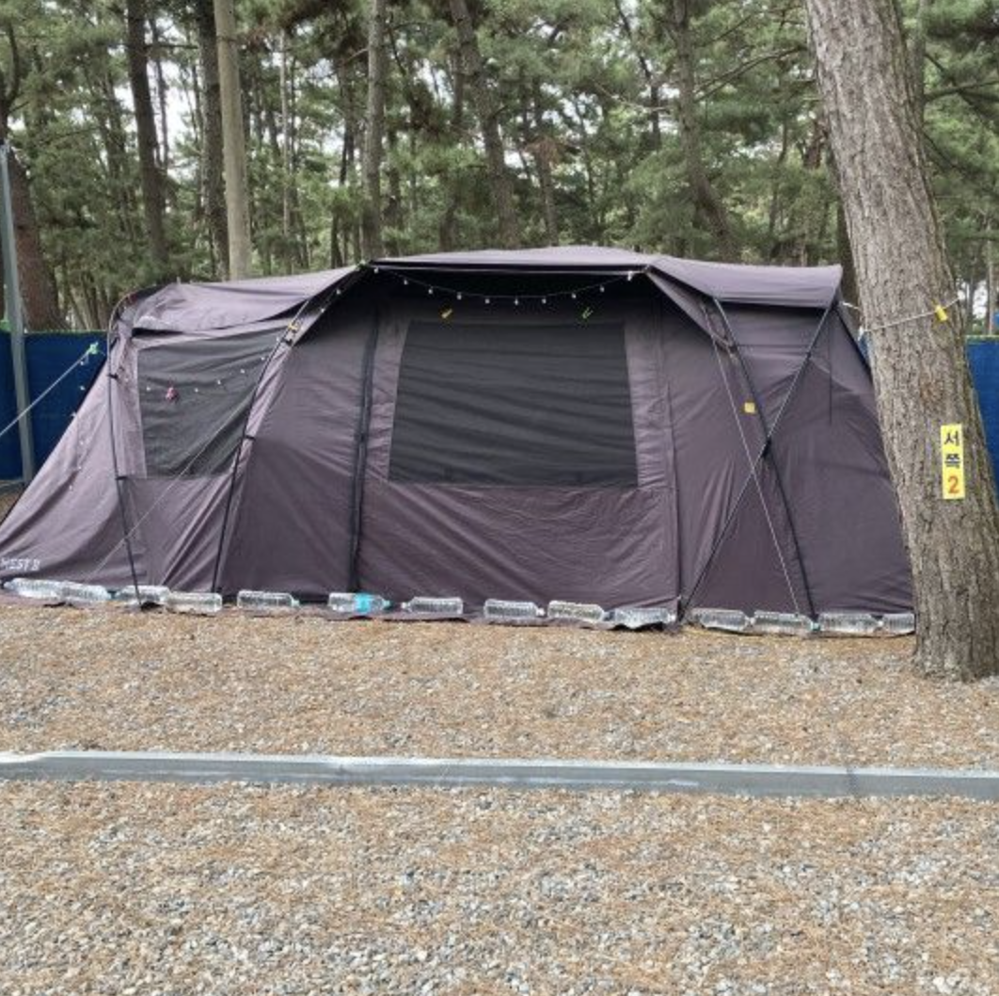
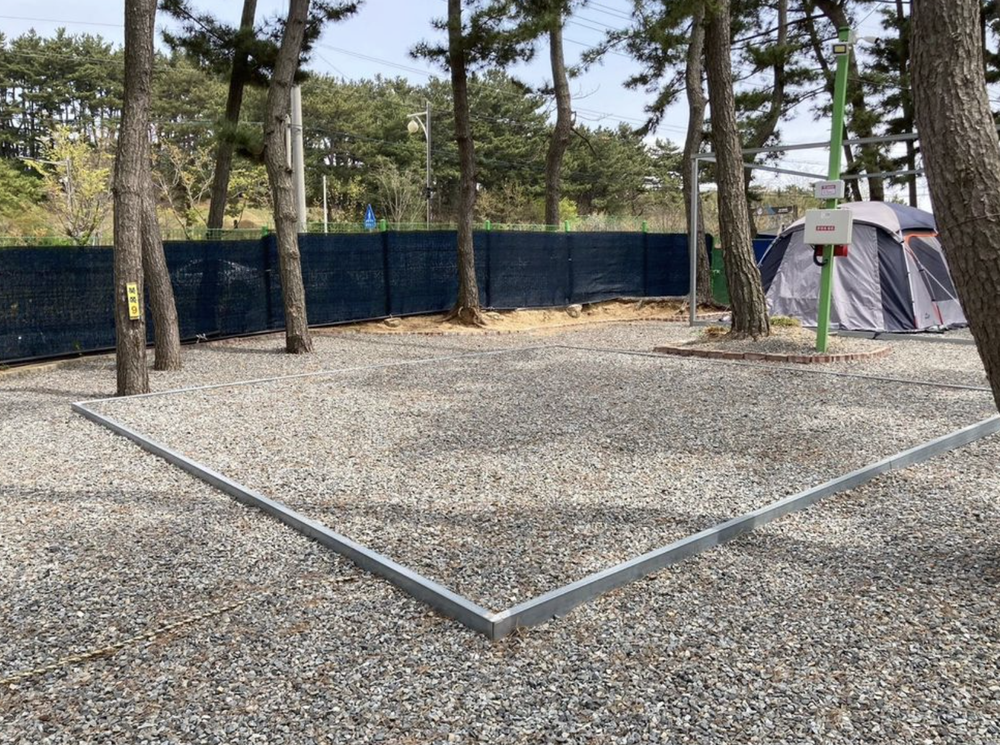
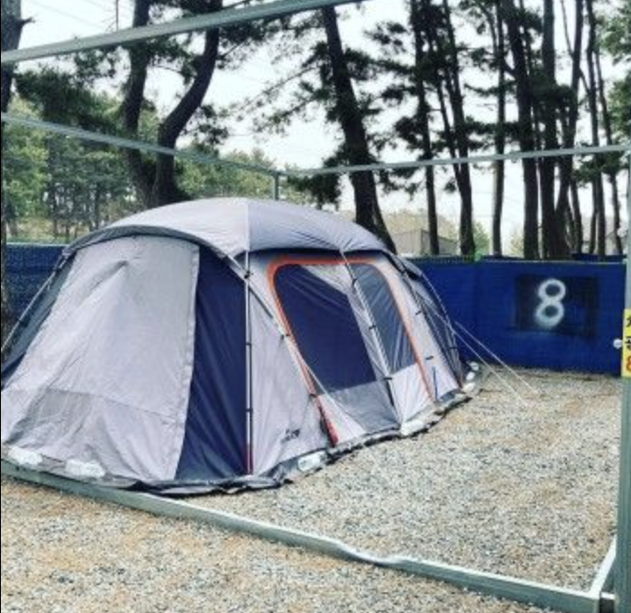
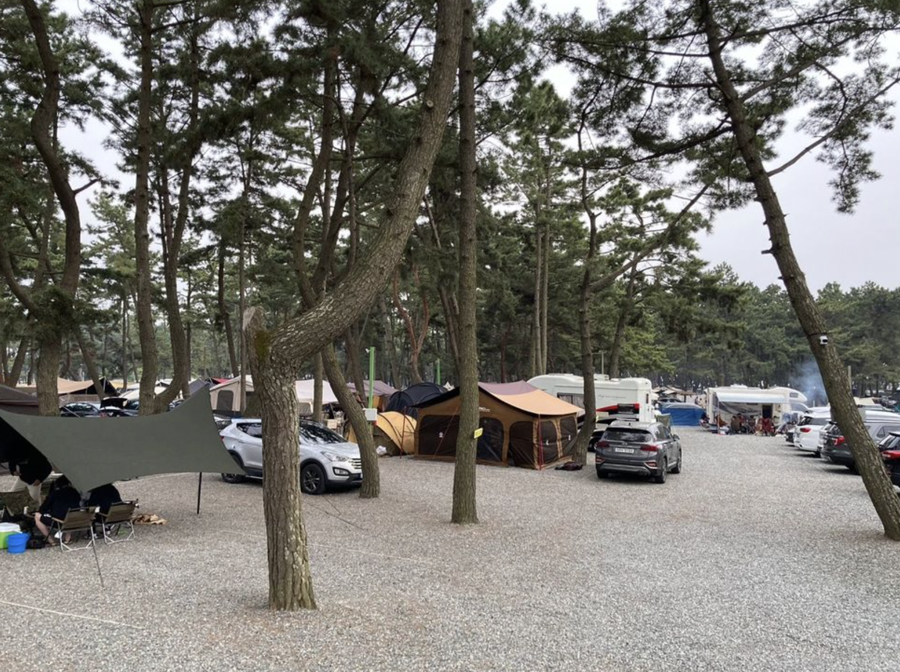
전문가가 찍은 사진을 AI가 분석하여 어떤 점이 좋고 부족한지 리포트로 제공합니다.
실제 적용 사례 2
구학 희망 캠핑장
📁 구학 희망 캠핑장 사진 원본

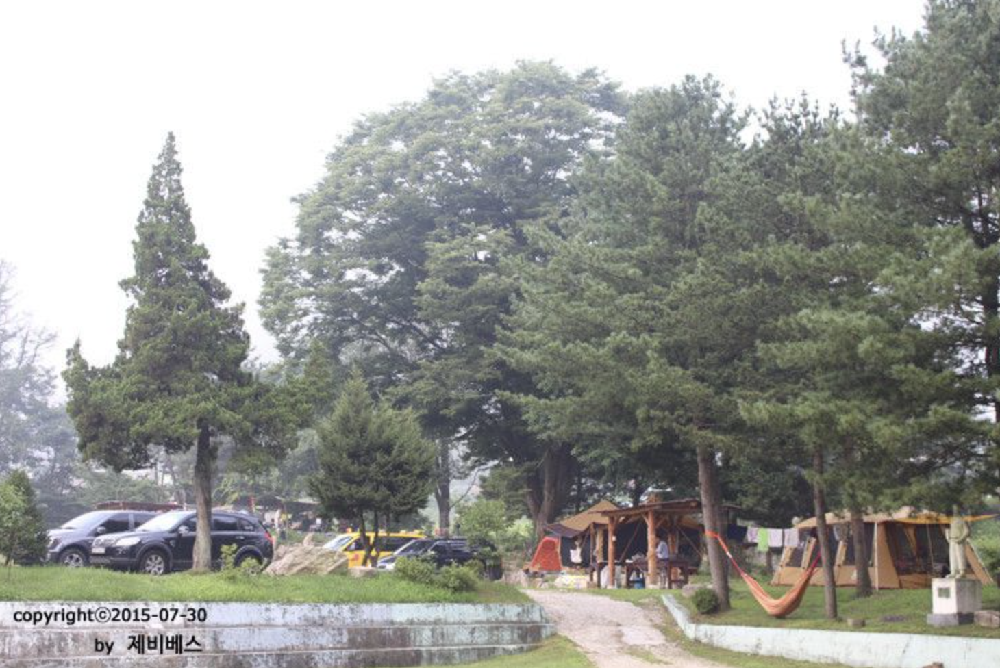
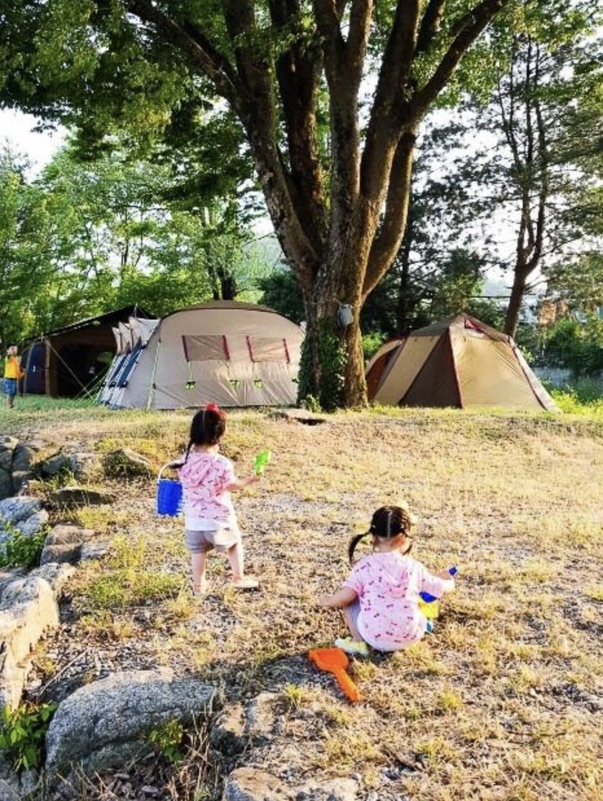
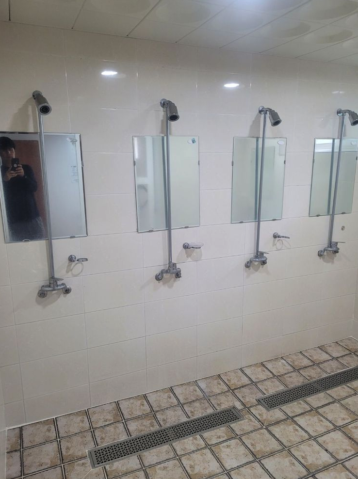
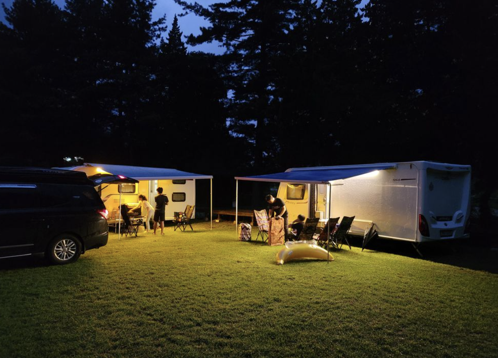
사진 퀄리티만 좋아져도 고객의 예약 전환율은 확실히 달라집니다.
Tip 2&3 예시
플래닝을 보고 수락하고,
Following Agent 기능으로 무엇이 변화했는지
파악해보자!
1
플래닝 단계 – 에이전트의 구현 계획

2
모니터링 – 파일 수정 확인
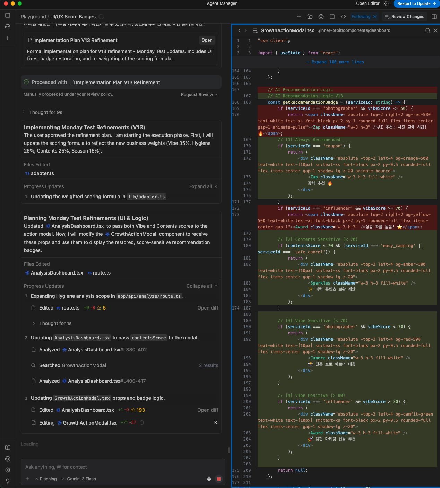
💡 핵심: "해줘"만 하지 말고, 에이전트가 어떤 파일을 수정하는지, 어떤 로직을 추가하는지 지켜보면 이해도가 쌍인다!